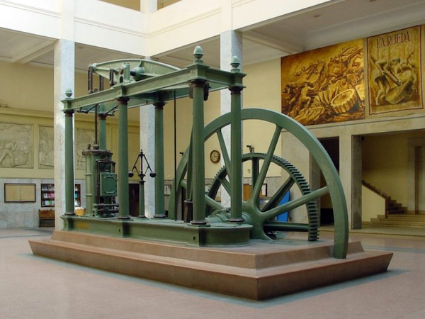

{% extends 'base.html' %} {% block head %}
<title>Universities IDB</title>
<style>
    :root {
        --primary-highlight-color: rgba(100, 100, 100, 0.75);
        --primary-background-color: rgb(100, 100, 100);
    }

    #index-top-image {
        background-size: cover;
        background-repeat: no-repeat;
        background-position: 50% 50%;
        background-image: url("https://thumbnails.texastribune.org/mqTx0nHcXzbyYBnODHV3aRITwbM=/1200x804/smart/filters:quality(95)/https://static.texastribune.org/media/files/ec9e4cecb784a6a461353ac943eb1d36/UT%20Austin%20Closures%20MG%2009%20TT.jpg");
        padding-top: 2rem;
        padding-bottom: 2rem;
    }

    .jumbotron {
        background-color: var(--primary-highlight-color);
        margin: 2rem;
    }

    .carousel-inner img {
        margin: auto;
    }

    .carousel-control-next,
    .carousel-control-prev {
        filter: invert(100%);
    }

    .main-button {
        height: 10rem;
        border-radius: 25px;
        background-size: cover;
        background-repeat: no-repeat;
        background-position: 50% 50%;
    }

    .first-image {
        background-image: url("https://thumbnails.texastribune.org/mqTx0nHcXzbyYBnODHV3aRITwbM=/1200x804/smart/filters:quality(95)/https://static.texastribune.org/media/files/ec9e4cecb784a6a461353ac943eb1d36/UT%20Austin%20Closures%20MG%2009%20TT.jpg");
    }

    .second-image {
        background-image: url("https://thumbnails.texastribune.org/mqTx0nHcXzbyYBnODHV3aRITwbM=/1200x804/smart/filters:quality(95)/https://static.texastribune.org/media/files/ec9e4cecb784a6a461353ac943eb1d36/UT%20Austin%20Closures%20MG%2009%20TT.jpg");
    }

    .third-image {
        background-image: url("https://thumbnails.texastribune.org/mqTx0nHcXzbyYBnODHV3aRITwbM=/1200x804/smart/filters:quality(95)/https://static.texastribune.org/media/files/ec9e4cecb784a6a461353ac943eb1d36/UT%20Austin%20Closures%20MG%2009%20TT.jpg");
    }

    #main-button img {
        object-fit: none;
        object-position: center;
        width: 100%;
        height: 100%;
    }

    #main-button div {
        position: absolute;
        top: 50%;
        left: 50%;
        transform: translate(-50%, -50%);
    }

    .highlight {
        background-color: var(--primary-highlight-color);
        border-radius: 5px;
        padding: 5px;
    }

    .footer {
        position: fixed;
        left: 0;
        bottom: 0;
        width: 100%;
        text-align: center;
        background-color: var(--primary-background-color);
    }
</style>
{% endblock %} {% block body %}
<div class="container-fluid" id="index-top-image">
    <div class="jumbotron text-center display-3">
        <p>Find the university for you!</p>
        <p></p>
    </div>
</div>

<div id="myCarousel" class="carousel slide" data-ride="carousel">
    <!-- Indicators -->
    <ol class="carousel-indicators">
      <li data-target="#myCarousel" data-slide-to="0" class="active"></li>
      <li data-target="#myCarousel" data-slide-to="1"></li>
      <li data-target="#myCarousel" data-slide-to="2"></li>
    </ol>
  
    <!-- Wrapper for slides -->
    <div class="carousel-inner">
      <div class="carousel-item active">
        
        <div class="carousel-caption d-none d-md-block">
            <h5>Majors</h5>
            <p>Click here to learn more</p>
          </div>
      </div>
  
      <div class="carousel-item">
          <div class="carousel-caption d-none d-md-block">
            <h5>Cities</h5>
            <p>Click here to learn more</p>
          </div>
      </div>
  
      <div class="carousel-item">
        
        <div class="carousel-caption d-none d-md-block">
            <h5>Universities</h5>
            <p>Click here to learn more</p>
          </div>
      </div>
    </div>
  
    <!-- Left and right controls -->
    <a class="carousel-control-prev" href="#myCarousel" role="button" data-slide="prev">
      <span class="carousel-control-prev-icon" style="outline: black;" aria-hidden="true"></span>
      <span class="sr-only">Previous</span>
    </a>
    <a class="carousel-control-next" href="#myCarousel" role="button" data-slide="next">
      <span class="carousel-control-next-icon" style="outline: black;" aria-hidden="true"></span>
      <span class="sr-only">Next</span>
    </a>
  </div>

<div class="footer">
    <a href="#">Learn more about us</a>
</div>
{% endblock %}
